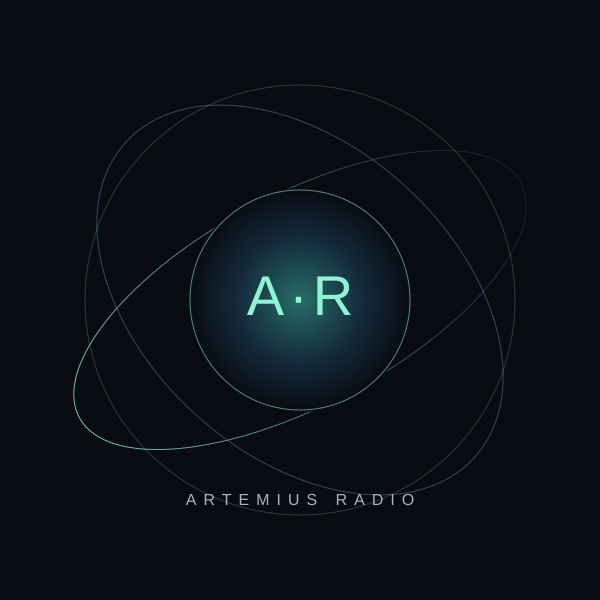

ORIGINAL MUSIC · INDEPENDENT RADIO
Sound beyond
the visible.
Un voyage sonore entre électro cinématographique, atmosphères profondes et univers imaginaires. Une radio dédiée aux créations d’Artemius et de Léa & Artemius.
UNE AUTRE DIMENSION DU SON
AUDIO TRANSMISSION 01 / ∞
FREQUENCIES FOR THE CURIOUS
TRANSMISSION
Écouter maintenant

ON AIRSÉLECTION ARTEMIUS RADIO
Le prochain voyage commence ici
Choisis un morceau dans la bibliothèque
00:0000:00
VOL
Prêt à diffuser tes créations.MP3 / STREAM
A UNIVERSE IN SOUND
Pas juste une playlist.
Un monde à explorer.
Des pulsations électroniques aux paysages sonores immersifs, chaque morceau ouvre une porte. Artemius Radio rassemble les créations musicales d’Artemius et Léa & Artemius dans un même espace, pensé pour l’écoute et la découverte.
Découvrir Léa & Artemius ↗01UNIVERS SONORE
∞VOYAGES POSSIBLES
100%CRÉATIONS SÉLECTIONNÉES
THE SOUND LIBRARY
La bibliothèque
Les titres publiés apparaîtront ici automatiquement.
Tous les morceauxChoisis un titre pour lancer l’écoute
Le silence avant la première note.
Les morceaux seront affichés ici après configuration de la base de données et ajout depuis le Studio.
INDEPENDENT SOUND · INFINITE CURIOSITY